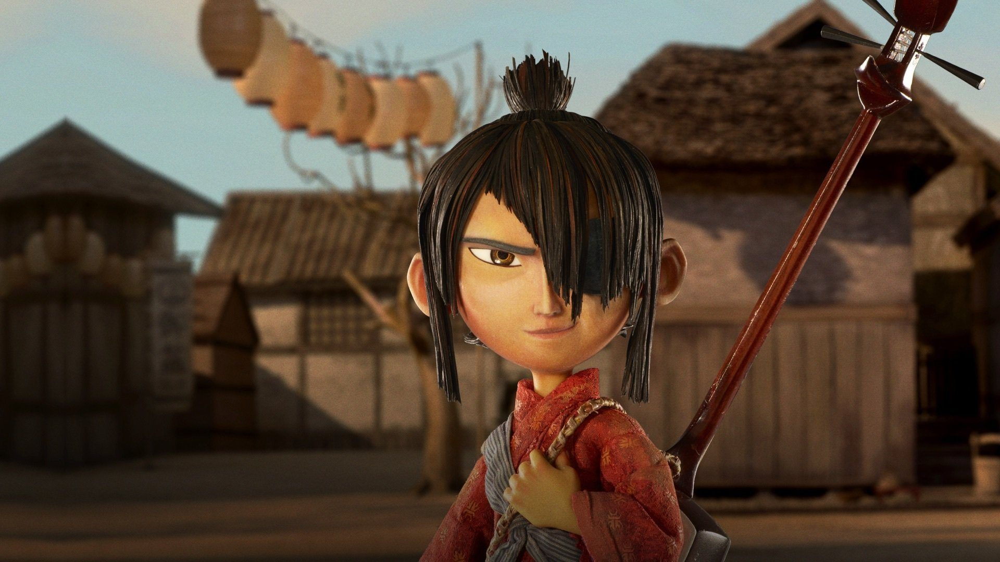
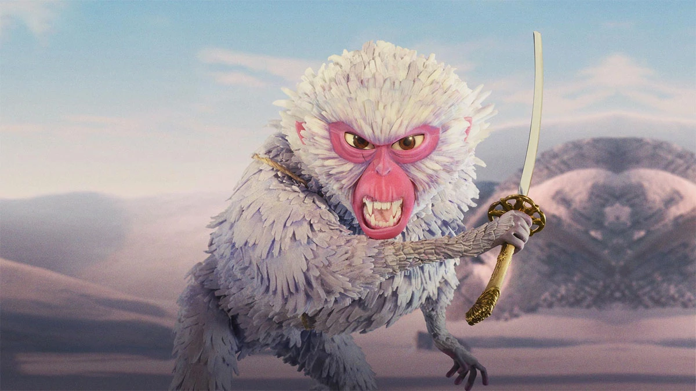
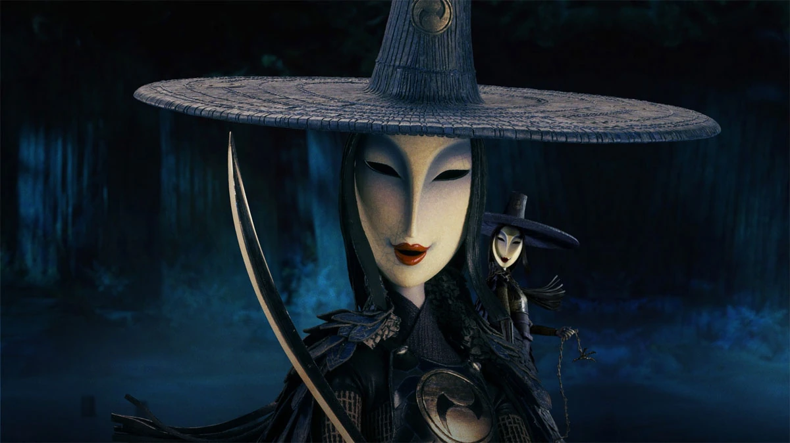
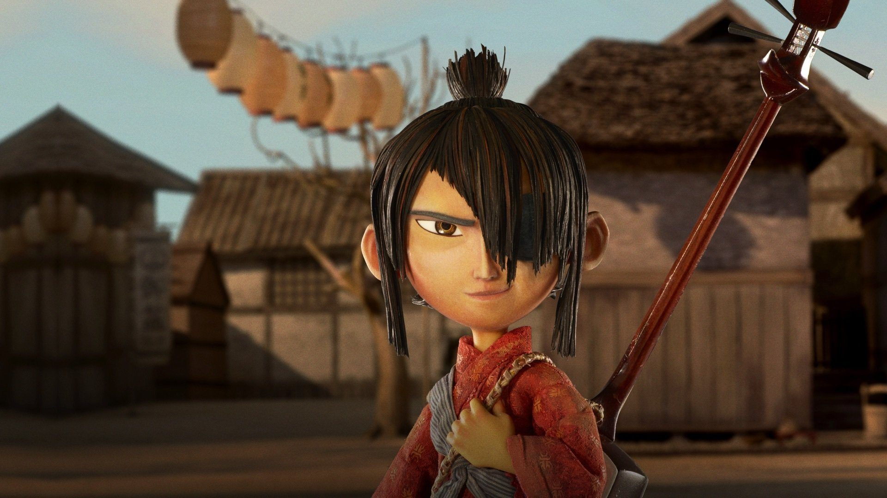
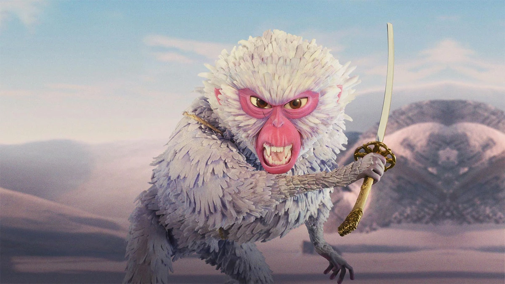
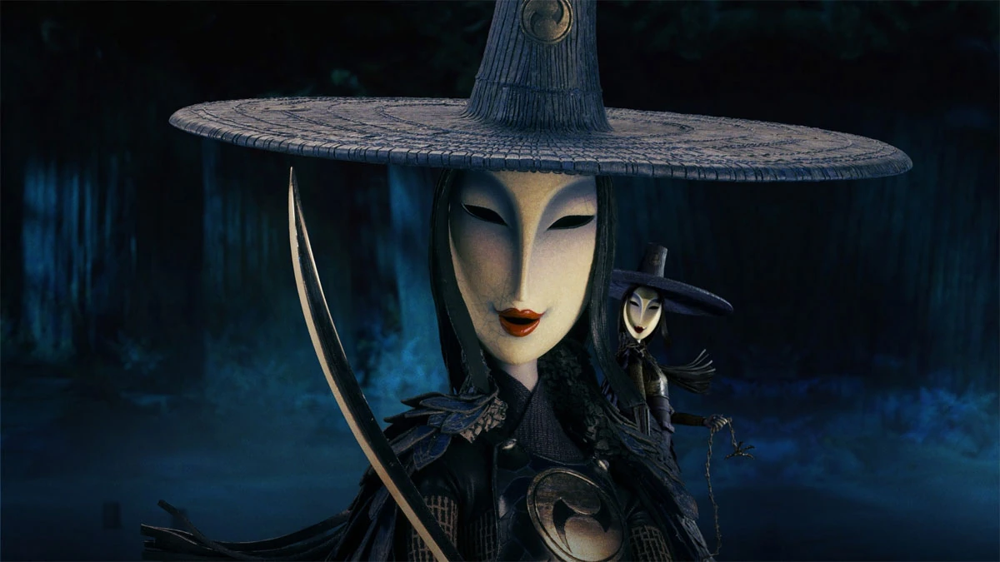

Cast
 Art Parkinson as kubo
 Charlize Theron as Monkey
 Rooney Mara as The Sisters
 Matthew McConaughey as Beetle
Matthew McConaughey as Beetle
"If you must blink, do it now." - Kubo
Kubo and the Two Strings is a 2016 stop-motion animated fantasy film directed by Travis Knight. the film is about a young boy who must find a magical suit of armor worn by his father, a legendary samurai warrior, to defeat an evil spirit from the past.
 Art Parkinson as kubo
 Charlize Theron as Monkey
 Rooney Mara as The Sisters
Matthew McConaughey as Beetle